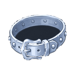
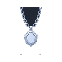

Void Breach D6
DungeonT6Lv 55-60
Entry key:  Platinum Key T6
Platinum Key T6
Creatures
| Creature | Level | Drops |
|---|---|---|
| Void Horror | Lv 55 |  Upgrade Stone T5 Upgrade Stone T5  Platinum Ring T6 Platinum Ring T6 |
| Abyss Mage | Lv 57 | Upgrade Stone T5  Platinum Dungeon Core Platinum Dungeon Core |
| Dungeon Guardian T6 | Lv 60 | Upgrade Stone T5  Platinum Earring T6 Platinum Earring T6 |
| Dungeon Lord T6 Boss | Lv 60 |  Normal Essence Upgrade Stone T5 Normal Essence Upgrade Stone T5  Platinum Belt T6Platinum Dungeon Core  Platinum Necklace T6 |